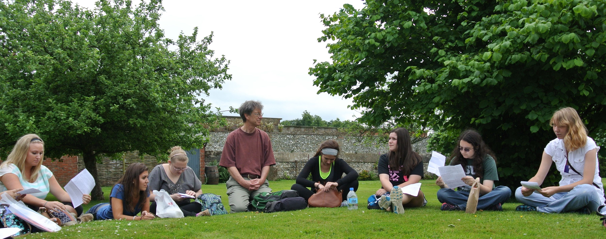

Last updated June 23, 2015

INTRODUCTION
In the Lyman Briggs College, where I have a 75% appointment, I teach primarily Introductory Biology. While I now focus almost exclusively on the Lyman Briggs Introductory Cell and Molecular Biology course (LB145; Bio II), for a number of years I taught the Lyman Briggs Introductory Organismal Biology course (LB144; Bio I), so I have taught on "both sides of the aisle". I also teach senior seminars in Lyman Briggs, having led seminars on Nature-Nurture and more recently on Evolutionary Medicine (S15) and a new seminar on the History of DNA Sequencing Technology. For two semesters, I also taught an undergraduate research course, funded by ConAgra Foods, in which Lyman Briggs students carried out research projects on Orville Redenbacher's Microwave Popcorn. I have also been involved in Study Abroad, having co-led experiences in both Panama (Tropical Biodiversity in May 2006) and England (Darwin's Anniversary in July 2009, Age of Wonder in July 2013).
In the fall of odd numbered years, I teach a 3 credit graduate course entitled, "Molecular Evolution: Principles and Techniques" (ZOL855), a computer workshop-based course in which students gain hands-on experience with computer programs used to infer phylogenetic relationships, primarily using DNA sequence data.
Course Websites with information on recent courses I've taught can be accessed below:
Syllabi for Study Abroad coursework for the England Programs can
be downloaded via the links below:
A FOCUS ON STUDENT LEARNING
In our teaching, we do our best to design and implement cool learning experiences for our students. Inherent in this process is experiential learning and inquiry, the use of backward design principles of curricular development, and documentation and analysis of student learning outcomes (assessment).
One of our major accomplishments in the Lyman Briggs Biology Program has been a changeover from traditional, "canned" laboratory exercises for students, to a "Teams and Streams" model that stresses inquiry and doing real science (Luckie et al. 2013). We also modified a traditional "march through the phyla" that was common in Intro Bio curricula to incorporate "tree-thinking", which allows students to understand phyla in their evolutionary context (Smith & Cheruvelil 2009; Smith et al. 2013).
We also strive to incorporate both experimental and innovative tools and techniques into our classrooms. With support from NSF, I worked with Dr. Peter J. T. White and Dr. Merle K. Heidemann to produce, implement, and assess the effectiveness of a set of case-based materials for learning evolutionary concepts (White et al. in press, 2013a, b; Heidemann et al. 2014a, b). These resources are freely available at our Evo-ED website.
More recently, I've been working with Rob Pennock, Louise Mead, Mike Wiser, Wendy Johnson, and Amy Lark to develop curricula and assess the effectiveness of the incorporation of Avida-ED evolution education software into biology courses. Beginning the in the summer of 2015, we produced a number of professional development workshops, funds by an NSF IUSE grant, to train cohorts of biology faculty to use Avida-ED and help them incorporate it into their own teaching.
REFERENCES
White PJT, Heidemann MK, Smith JJ. 2015. A cross-course investigation of integrative cases for evolution education. Journal of Microbiology and Biology Education 16: xxx - xxx. in press.
Heidemann MK, White PJT, Smith JJ. 2014a. "Joel E. Greengiant learns about peas: from nucleotides to selection." Published Case Study and Teaching Notes, National Center for Case Study Teaching in Science, University at Buffalo, State University of New York.
Heidemann MK, White PJT, Smith JJ. 2014b. "The evolution of color vision in monkeys: from nucleotides to ecology." Published Case Study and Teaching Notes, National Center for Case Study Teaching in Science, University at Buffalo, State University of New York.
White PJT, Heidemann MK, Smith JJ. 2013a. A new integrative approach to evolution education. BioScience 63: 586 - 594. doi: 10.1525/bio.2013.63.7.11.
White PJT, Heidemann MK, Loh M, Smith JJ. 2013b. Integrative cases for teaching evolution. Evolution: Education and Outreach. 6:17. doi:10.1186/1936-6434-6-17.
Luckie DL, Smith JJ, Cheruvelil KS, Fata-Hartley C, Murphy CA, Urquhart GR. 2013. The "Anti-Cookbook Laboratory": Converting "Canned" Introductory Biology Laboratories to Multi-week Independent Investigations. Tested Studies for Laboratory Teaching: Proceedings of the Association for Biology Laboratory Education, 34: 196-213.
Smith JJ, Cheruvelil KS, Auvenshine S. 2013. Assessment of Student Learning Associated with Tree-thinking in an Undergraduate Introductory Organismal Biology Course. CBE Life Sciences Education, 12: 1-11.
Smith JJ, Cheruvelil KS. 2009. Using Inquiry and Tree-Thinking to "March Through the Animal Phyla". Evolution: Education and Outreach 2: 429-444.
Last updated June 23, 2015